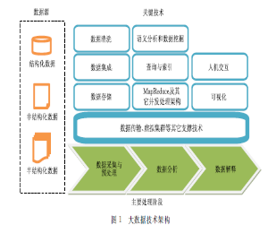

| 个人简介 | 论文 | 长文档 | 透视表 | PPT1 | PPT2 |
大数据安全与隐私保护
冯登国 张敏 李昊
（中国科学院软件研究所可信计算与信息保障实验室北京100190）
摘要大数据（Big Date）是当前学术界和产业界的研究热点，正影响着人们日常生活方式、工作习惯及思考模式，但目前大数据在收集、存储和使用过程中面临着诸多安全风险，大数据所导致的隐私泄露为用户带来严重困扰，虚拟数据将导致错误或无效的大数据分析结果，该文分析了实现大数据安全与隐私保护所面临的技术挑战，整理了若干关键技术及其最新进展，分析指出大数据在引入安全问题的同时，也是解决信息安全问题的有效手段，它为信息安全领域的发展带来了新的契机。
关键词 大数据；大数据安全；隐私保护；信息安全
中图法分类号 ＴＰ309ＤＯＩ１０．３７２４／ＳＰ．Ｊ．１０１６．２０１４．００２４６
Big Data Security and Privacy Protection
Feng Deng-Guo ZHANG Min LI Hao
(Trusted Computing and information Assurance Laboratory,Institute of Software,Chinese Academy of Sciences,Beijing 100190)
Abstract Nowdays big data has become a hot topic in both the academic and the industrial research.It is regarded as a revolution that will thransform how we live,work and think.However,there are many security risks in the filed of data security and privacy protection when collecting,storing and utilizing big data.Privacy issues related with big data analysis spell trouble for indi-viduals.And deceptive or fake information within big data may lead to incorrect analysis results.This paper summarizes and analyzes the security challenges brought by big data,and then describes the key technologies which can be exploited to deal with these challenges.Finally,this paper argues that big data brings not only chanllenges,but also technical revolution in the field of information security.
Key words big data;big data security;privacy protection;information security
当今，社会信息化和网络化的发展导致数据爆炸式增长，据统计，平均每秒有200万用户在使用谷歌搜索，Facebook用户每天共享的东西超过40亿，Twitter每天处理的维持数量超过3.4亿。同时，科学计算、医疗卫生、金融、零售业等各行业也有大量数据在不断产生。2012年全球信息总量已经达到2.7ＺＢ，而到2015年这一数值预计会达到8ＺＢ。
这一现象引发了人们的广泛关注，在学术界，图灵奖获得者Jim Gary提出了科学研究的第四范式，即以大数据为基础的数据密集型科学研究；
2008年《Nature》推出了大数据专刊。IT产业界行动更为积极，持续关注数据再利用，挖掘大数据的潜在价值，目前，大数据已成为继云计算之后信息技术领域的另一个信息产业增长点。据Gartner预测，2013年大数据将带动全球IT支出340亿美元，到2016年全球在大数据方面的总花费将达到2320亿美元。Gartner将“大数据”技术列入2012年对众多公司和组织机构具有战略意义的十大技术与趋势之一。不仅如此，作为国家和社会的主要管理者，各国政府也是大数据技术推广的主要推动者。2009年3月美国政府上线了data.gov网站，想公众开放政府所拥有的公共数据。随后，英国、等政府也开始了大数据开放的进程，截止目前，全世界已经正式有35个国家和地区构建了自己的数据开放门户网站。美国政府联合6个部门宣布了2亿美元的“大数据研究与发展计划”。在我国，2012１２年中国通信学会、中国计算机学会等重要学术组织先后成立了大数据专家委员会，为我国大数据应用和发展提供学术咨询。
目前大数据的发展仍然面临着许多问题，安全与隐私问题是人们公认的关键问题之一【１－２】。当前，人们在互联网上的一言一行都掌握在互联网商家手中，包括购物习惯、阅读习惯、检索习惯等等。多项实际案例说明，即使无害的数据被大量收集后，也会暴露个人信息【1】。事实上，大数据安全含义更为广泛，人们面临的威胁并不仅限于个人隐私泄露。与其他信息一样，大数据在存储、处理、传输等过程中面临着诸多安全风险，具有数据安全与隐私保护需求，而现在大数据安全与隐私保护，较以往其他安全问题（如云计算中的数据安全等）更为棘手。这是因为在云计算中，虽然服务提供商控制了数据的存储与运行环境，但是用户仍然有些办法保护自己的数据，例如通过密码学的技术手段实现数据安全存储与安全计算，或者通过可信计算方式实现运行环境安全等。而在大数据的背景下，Facebook等商家既是数据的生产者，又是数据的存储、管理者和使用者，因此，单纯通过技术手段限制商家对用户信息的使用，实现用户隐私保护是及其困难的事【１】。
当前很多组织都认识到大数据的安全问题，并积极行动起来关注大数据的安全问题。2012年云安全联盟CSA组建了大数据工作组，旨在寻找针对数据中心安全和隐私问题的解决方案。本文在梳理大数据研究现状的基础上，重点分析了当前大数据所带来的安全挑战，详细阐述了当前大数据安全与隐私保护的关键技术。需要指出的是，大数据在引入新的安全问题和挑战的同时，也为信息安全领域带来了新的发展契机，即基于大数据的信息安全相关技术可以反过来用于大数据的安全与隐私保护。本文在第5节对其进行了初步分析与探讨。
2大数据研究概述
2.1大数据来源与特征
普通的观点认为，大数据是指规模大且复杂，以至于很难用现有的数据管理工具或数据处理应用来处理的数据集②。大数据的常见特点包括大规模（volume）、高速性（velocity）和多样性（variety）。
根据来源的不同，大数据可大致分为如下几类【3】：
(1)来自于人。人们在互联网活动以及使用移动互联网过程中所产生的各类数据，包括文字、图片、视频等信息；
(2)来自于机。各类计算机信息系统产生的数据，以文件、数据库、多媒体等形式存在，也包括审计、日志等自动生成的信息；
(3)来自于物。各类数字设备所采集的数据，如摄像头产生的数字信号、医疗物联网中产生的人的各项特征值、天文望远镜所产生的大量数据等。
目前大数据分析应用于科学、医药、商业等各个领域，用途差异巨大，但其目标可以归纳为如下几类：
（1）获得知识与推测趋势。
人们进行数据分析由来已久，最初且重要的目的就是获取知识、利用知识。由于大量原始、真实信息，大数据分析能够有效的摈弃个体差异，帮助人们透过现象、更准确地把握事物背后的规律。基于挖掘出的知识，可以更准确的对自然或社会现象进行预测。典型的案例是Google公司的Google Flu Trends网站。它通过统计人们对流感信息的搜索，查询Google服务器日志的ＩＰ地址判定搜索来源，从而发布对世界各地流感情况的预测③。又如，人们可以根据Twitter信息预测股票行情④等。
（2）分析掌握个性化特征。
个体活动在满足某些群体特征的同时，也具有
鲜明的个性特征。正如“长尾理论”中那条细长的
尾巴那样，这些特征可能千差万别。企业通过长时间、多维度的数据积累，可以分析用户行为规律，更准确地描绘其个体轮廓，为用户提供更好的个性化产品和服务，以及更准确的广告推荐。例如Google通过其大数据产品对用户的习惯和爱好进行分析，帮助广告商评估广告活动效率，预估在未来可能存在高达到数十亿美元的市场规模①。
（3）通过分析辨识真相。
错误信息不如没有信息。由于网络中信息的传播更加便利，所以网络虚假信息造成的危害也更大。例如，2013年4月24日，美联社Twitter账号被盗，发布虚假信息称总统奥巴马受恐怖袭击受伤，虽然虚假消息在几分钟内被禁止，但是仍然引发了美国股市短暂跳水。由于大数据来源广泛及其多样性，在一定程度上它可以帮助实现信息的去伪存真。目前人们开始尝试利用大数据进行虚假信息识别，例如，社交点评类网站Yelp利用大数据对虚假评论进行过滤，为用户提供更为真实的评论信息②；Yahoo③和Thinkmail④等利用大数据分析技术来过滤垃圾邮件。
2.3大数据技术框架
大数据处理涉及数据的采集、管理、分析与展示等。图1是相关技术示意图。

（１）数据采集与预处理（Data Acquisition&Preparation）.
大数据的数据源多样化，包括数据库、文本、图片、视频、网页等各类结构化、非结构化数据，因此，大数据处理的第一步是从数据源采集数据并进行预处理操作，为后继流程提供统一的高质量的数据集。由于大数据的来源不一，可能存在不同模式描述，甚至存在矛盾。因此，在数据集成过程中对数据进行清洗，已消除相似、重复或不一致的数据是非常必要的。文献[4-7]中数据清洗和集成技术针对大数据的特点，提出非结构化或半结构化数据的清洗以及超大规模数据的集成。
数据存储与大数据应用密切相关。某些实时性要求较高的应用，如状态监控，更适合采用流处理模式，直接在清洗和集成后的数据源上进行分析。而大多数其他应用则需要存储，以支持后继更深度的数据分析流程．为了提高数据吞吐量，降低存储成本，通常采用分布式架构来存储大数据．这方面有代表性的研究包括：文件系统ＧＦＳ【8】、ＨＤＦＳ【9】和Ｈａｙｓｔａｃｋ【10】等；ＮｏＳＱＬ数据库Ｍｏｎｇｏｄｂ、ＣｏｕｃｈＤＢ、ＨＢａｓｅ、Ｒｅｄｉｓ、Ｎｅｏ４ｊ等．
（2）数据分析（ＤａｔａＡｎａｌｙｓｉｓ）．
数据分析是大数据应用的核心流程．根据不同层次大致可分为３类：计算架构、查询与索引以及数据分析和处理．在计算架构方面，ＭａｐＲｅｄｕｃｅ【11】是当前广泛采用的大数据集计算模型和框架．为了适应一些对任务完成时间要求较高的分析需求，文献［１２］对其性能进行了优化；文献［１３］提出了一种基于ＭａｐＲｅｄｕｃｅ架构的数据流分析解决方案ＭＡＲＩＳＳＡ，使其能够支持实时分析任务；文献［１４］则提出了基于时间的大数据分析方案Ｍａｓｔｉｆｆ；文献［１５］也针对广告推送等实时性要求较高的应用，提出了基于ＭａｐＲｅｄｕｃｅ的ＴｉＭＲ框架来进行实时流处理．在查询与索引方面，由于大数据中包含了大量的非结构化或半结构化数据，传统关系型数据库的查询和索引技术受到限制，而ＮｏＳＱＬ类数据库技术得到更多关注．例如，文献［１６］提出了一个混合的数据访问架构ＨｙＤＢ以及一种并发数据查询及优化方法．文献［１７］对ｋｅｙ－ｖａｌｕｅ类型数据库的查询进行了性能优化．在数据分析与处理方面，主要涉及的技术包括语义分析与数据挖掘等．由于大数据环境下数据呈现多样化特点，所以对数据进行语义分析时，就较难统一术语进而挖掘信息．文献［１８］针对大数据环境，提出了一种解决术语变异问题的高效术语标准化方法．文献［１９］对语义分析中语义本体的异质性展开了研究．
http://serve.yesky.com/datacenter/172/34705.shtml
http://adage.com/article/digital/fake reviews rise yelp crack fraudsters/237486/
传统数据挖掘技术主要针对结构化数据，因此迫切需要对非结构化或半结构化的数据挖掘技术展开研究．文献［２０］提出了一种针对图片文件的挖掘技术，文献［２１］提出了一种大规模ＴＥＸＴ文件的检索和挖掘技术．
（４）数据解释（ＤａｔａＩｎｔｅｒｐｒｅｔａｔｉｏｎ）．
数据解释旨在更好地支持用户对数据分析结果的使用，涉及的主要技术为可视化和人机交互．目前已经有了一些针对大规模数据的可视化研究［22-23］，通过数据投影、维度降解或显示墙等方法来解决大规模数据的显示问题．由于人类的视觉敏感度限制了更大屏幕显示的有效性，以人为中心的人机交互设计也将是解决大数据分析结果展示的一种重要技术．
其它支撑技术（ＤａｔａＴｒａｎｓｍｉｓｓｉｏｎ＆ＶｉｒｔｕａｌＣｌｕｓｔｅｒ）．
虽然大数据应用强调以数据为中心，将计算推送到数据上执行，但是在整个处理过程中，数据的传输仍然是必不可少的，例如一些科学观测数据从观测点向数据中心的传输等．文献［２４－２５］针对大数据特征研究高效传输架构和协议．此外，由于虚拟集群具有成本低、搭建灵活、便于管理等优点，人们在大数据分析时可以选择更加方便的虚拟集群来完成各项处理任务．因此需要针对大数据应用展开的虚拟机集群优化研究［26］。
3大数据带来的安全挑战
科学技术是一把双刃剑．大数据所引发的安全问题与其带来的价值同样引人注目．而最近爆发的“棱镜门”事件更加剧了人们对大数据安全的担忧．与传统的信息安全问题相比，大数据安全面临的挑战性问题主要体现在以下几个方面．
3.1大数据中的用户隐私保护
大量事实表明，大数据未被妥善处理会对用户的隐私造成极大的侵害．根据需要保护的内容不同，隐私保护又可以进一步细分为位置隐私保护、标识符匿名保护、连接关系匿名保护等．人们面临的威胁并不仅限于个人隐私泄漏，还在于基于大数据对人们状态和行为的预测．一个典型的例子是某零售商通过历史记录分析，比家长更早知道其女儿已经怀孕的事实，并向其邮寄相关广告信息．而社交网络分析研究也表明，可以通过其中的群组特性发现用户的属性．例如通过分析用户的Ｔｗｉｔｔｅｒ信息，可以发现用户的政治倾向、消费习惯以及喜好的球队等【27-28】．当前企业常常认为经过匿名处理后，信息不包含用户的标识符，就可以公开发布了．但事实上，仅通过匿名保护并不能很好地达到隐私保护目标．例如，ＡＯＬ公司曾公布了匿名处理后的３个月内部分搜索历史，供人们分析使用．虽然个人相关的标识信息被精心处理过，但其中的某些记录项还是可以被准确地定位到具体的个人．纽约时报随即公布了其识别出的１位用户．编号为４４１７７４９的用户是１位６２岁的寡居妇人，家里养了３条狗，患有某种疾病，等等．另一个相似的例子是，著名的ＤＶＤ租赁商Ｎｅｔｆｌｉｘ曾公布了约５０万用户的租赁信息，悬赏１００万美元征集算法，以期提高电影推荐系统的准确度．但是当上述信息与其它数据源结合时，部分用户还是被识别出来了．研究者发现，Ｎｅｔｆｌｉｘ中的用户有很大概率对非ｔｏｐ１００、ｔｏｐ５００、ｔｏｐ１０００的影片进行过评分，而根据对非ｔｏｐ影片的评分结果进行去匿名化（ｄｅ－ａｎｏｎｙｍｉｚｉｎｇ）攻击的效果更好【29】．目前用户数据的收集、存储、管理与使用等均缺乏规范，更缺乏监管，主要依靠企业的自律．用户无法确定自己隐私信息的用途．而在商业化场景中，用户应有权决定自己的信息如何被利用，实现用户可控的隐私保护．例如用户可以决定自己的信息何时以何种形式披露，何时被销毁．包括：（１）数据采集时的隐私保护，如数据精度处理；（２）数据共享、发布时的隐私保护，如数据的匿名处理、人工加扰等；（３）数据分析时的隐私保护；（４）数据生命周期的隐私保护；（5）隐私数据可信销毁等.
3.２大数据的可信性
关于大数据的一个普遍的观点是，数据自己可以说明一切，数据自身就是事实①．但实际情况是，如果不仔细甄别，数据也会欺骗，就像人们有时会被自己的双眼欺骗一样．
大数据可信性的威胁之一是伪造或刻意制造的数据，而错误的数据往往会导致错误的结论．若数据应用场景明确，就可能有人刻意制造数据、营造某种“假象”，诱导分析者得出对其有利的结论．由于虚假信息往往隐藏于大量信息中，使得人们无法鉴别真伪，从而做出错误判断．例如，一些点评网站上的虚假评论，混杂在真实评论中使得用户无法分辨，可能误导用户去选择某些劣质商品或服务．由于当前网络社区中虚假信息的产生和传播变得越来越容易，其所产生的影响不可低估．用信息安全技术手段鉴别所有来源的真实性是不可能的．
大数据可信性的威胁之二是数据在传播中的逐步失真．原因之一是人工干预的数据采集过程可能引入误差，由于失误导致数据失真与偏差，最终影响数据分析结果的准确性．此外，数据失真还有数据的版本变更的因素．在传播过程中，现实情况发生了变化，早期采集的数据已经不能反映真实情况．例如，餐馆电话号码已经变更，但早期的信息已经被其它搜索引擎或应用收录，所以用户可能看到矛盾的信息而影响其判断．
因此，大数据的使用者应该有能力基于数据来源的真实性、数据传播途径、数据加工处理过程等，了解各项数据可信度，防止分析得出无意义或者错误的结果．
密码学中的数字签名、消息鉴别码等技术可以用于验证数据的完整性，但应用于大数据的真实性时面临很大困难，主要根源在于数据粒度的差异．例如，数据的发源方可以对整个信息签名，但是当信息分解成若干组成部分时，该签名无法验证每个部分的完整性．而数据的发源方无法事先预知哪些部分被利用、如何被利用，难以事先为其生成验证对象．
3.3如何实现大数据访问控制
访问控制是实现数据受控共享的有效手段．由于大数据可能被用于多种不同场景，其访问控制需求十分突出．
大数据访问控制的特点与难点在于：
（１）难以预设角色，实现角色划分．由于大数据应用范围广泛，它通常要为来自不同组织或部门、不同身份与目的的用户所访问，实施访问控制是基本需求．然而，在大数据的场景下，有大量的用户需要实施权限管理，且用户具体的权限要求未知．面对未知的大量数据和用户，预先设置角色十分困难．
（２）难以预知每个角色的实际权限．由于大数据场景中包含海量数据，安全管理员可能缺乏足够的专业知识，无法准确地为用户指定其所可以访问的数据范围．而且从效率角度讲，定义用户所有授权规则也不是理想的方式．以医疗领域应用为例，医生为了完成其工作可能需要访问大量信息，但对于数据能否访问应该由医生来决定，不应该需要管理员对每个医生做特别的配置．但同时又应该能够提供对医生访问行为的检测与控制，限制医生对病患数据的过度访问．
此外，不同类型的大数据中可能存在多样化的访问控制需求．例如，在Ｗｅｂ２．０个人用户数据中，存在基于历史记录的访问控制；在地理地图数据中，存在基于尺度以及数据精度的访问控制需求；在流数据处理中，存在数据时间区间的访问控制需求，等等．如何统一地描述与表达访问控制需求也是一个挑战性问题．
４大数据安全与隐私保护关键技术
当前亟需针对前述大数据面临的用户隐私保护、数据内容可信验证、访问控制等安全挑战，展开大数据安全关键技术研究．本节选取部分重点相关研究领域予以介绍．
４．１数据发布匿名保护技术
对于大数据中的结构化数据（或称关系数据）而言，数据发布匿名保护是实现其隐私保护的核心关键技术与基本手段，目前仍处于不断发展与完善阶段．以典型的ｋ匿名方案为例．早期的方案［３０－３１］及其优化方案［３２－３４］通过元组泛化、抑制等数据处理，将准标识符分组．每个分组中的准标识符相同且至少包含ｋ个元组，因而每个元组至少与ｋ-１个其它元组不可区分．由于ｋ匿名模型是针对所有属性集合而言，对于具体的某个属性则未加定义，容易出现某个属性匿名处理不足的情况．若某等价类中某个敏感属性上取值一致，则攻击者可以有效地确定该属性值．针对该问题研究者提出ｌ多样化（ｌ－ｄｉｖｅｒｓｉｔｙ）［３５］匿名．其特点是在每一个匿名属性组里敏感数据的多样性满足要大于或等于ｌ．实现方法包括基于裁剪算法的方案［３６］以及基于数据置换的方案［３７］等．此外，还有一些介于ｋ匿名与ｌ多样化之间的方案．进一步的，由于l-ｄｉｖｅｒｓｉｔｙ只是能够尽量使敏感数据出现的频率平均化．当同一等价类中数据范围很小时，攻击者可猜测其值．ｔ贴近性（ｔ－ｃｌｏｓｅｎｅｓｓ）方案［３８］要求等价类中敏感数据的分布与整个数据表中数据的分布保持一致．其它工作包括（ｋ，ｅ）匿名模型［３９］、（Ｘ，Ｙ）匿名模型［４０］等．上述研究是针对静态、一次性发布情况．而现实中，数据发布常面临数据连续、多次发布的场景．需要防止攻击者对多次发布的数
据联合进行分析，破坏数据原有的匿名特性［４１－４２］．
①http://news.xinhuanet.com/info/2013-04/11/c_132300013.htm
在大数据场景中，数据发布匿名保护问题较之更为复杂：攻击者可以从多种渠道获得数据，而不仅仅是同一发布源．例如，在前所提及的Ｎｅｔｆｌｉｘ应用中，人们［４３］发现攻击者可通过将数据与公开可获得的ｉｍｄｂ相对比，从而识别出目标在Ｎｅｔｆｌｉｘ的账号．并据此获取用户的政治倾向与宗教信仰等（通过用户的观看历史和对某些电影的评论和打分分析获得）．此类问题有待更深入的研究．
4.２社交网络匿名保护技术
社交网络产生的数据是大数据的重要来源之一，同时这些数据中包含大量用户隐私数据．截至２０１２年１０月Ｆａｃｅｂｏｏｋ的用户成员就已达１０亿．由于社交网络具有图结构特征，其匿名保护技术与结构化数据有很大不同．
社交网络中的典型匿名保护需求为用户标识匿名与属性匿名（又称点匿名），在数据发布时隐藏了用户的标识与属性信息；以及用户间关系匿名（又称边匿名），在数据发布时隐藏用户间的关系．而攻击者试图利用节点的各种属性（度数、标签、某些具体连接信息等），重新识别出图中节点的身份信息．
目前的边匿名方案大多是基于边的增删．随机增删交换边的方法可以有效地实现边匿名．其中文献［４４］在匿名过程中保持邻接矩阵的特征值和对应的拉普拉斯矩阵第二特征值不变，文献［４５］根据节
点的度数分组，从度数相同的节点中选择符合要求的进行边的交换，类似的还有文献［４６－４７］．这类方法的问题是随机增加的噪音过于分散稀少，存在匿名边保护不足问题．
另一个重要思路是基于超级节点对图结构进行分割和集聚操作．如基于节点聚集的匿名方案［４８］、基于基因算法的实现方案［４９］、基于模拟退火算法的实现方案［５０］以及先填充再分割超级节点的方案［５１］．文献［５２］所提出的ｋ－ｓｅｃｕｒｉｔｙ概念，通过ｋ个同构子图实现图匿名保护．基于超级节点的匿名方案虽然能够实现边的匿名，但是与原始社交结构图存在较大区别，以牺牲数据的可用性为代价．
社交网络匿名方案面临的重要问题是，攻击者可能通过其它公开的信息推测出匿名用户，尤其是用户之间是否存在连接关系．例如，可以基于弱连接对用户可能存在的连接进行预测［５３］，适用于用户关系较为稀疏的网络；根据现有社交结构对人群中的等级关系进行恢复和推测［５４］；针对微博型的复合社交网络进行分析与关系预测［５５］；基于限制随机游走方法，推测不同连接关系存在的概率［５６］，等等．研究表明［５７］，社交网络的集聚特性对于关系预测方法的准确性具有重要影响，社交网络局部连接密度增长，集聚系数增大，则连接预测算法的准确性进一步增强．因此，未来的匿名保护技术应可以有效抵抗此类推测攻击．
４．３数据水印技术
数字水印是指将标识信息以难以察觉的方式嵌入在数据载体内部且不影响其使用的方法，多见于多媒体数据版权保护．也有部分针对数据库和文本文件的水印方案．
由数据的无序性、动态性等特点所决定，在数据库、文档中添加水印的方法与多媒体载体上有很大不同．其基本前提是上述数据中存在冗余信息或可容忍一定精度误差．例如，Ａｇｒａｗａｌ等人［５８－５９］基于数据库中数值型数据存在误差容忍范围，将少量水印信息嵌入到这些数据中随机选取的最不重要位上．而Ｓｉｏｎ等人［６０－６１］提出一种基于数据集合统计特征的方案，将一比特水印信息嵌入在一组属性数据中，防止攻击者破坏水印．此外，通过将数据库指纹信息嵌入水印中［６２］，可以识别出信息的所有者以及被分发的对象，有利于在分布式环境下追踪泄密者；通过采用独立分量分析技术（简称ＩＣＡ），可以实现无需密钥的水印公开验证［６３］．其它相关工作包括文献［６４－６５］．若在数据库表中嵌入脆弱性水印，可以帮助及时发现数据项的变化［６６］．文本水印的生成方法种类很多，可大致分为基于文档结构微调的水印［６７］，依赖字符间距与行间距等格式上的微小差异；基于文本内容的水印［６８］，依赖于修改文档内容，如增加空格、修改标点等；以及基于自然语言的水印［６９］，通过理解语义实现变化，如同义词替换或句式变化等．上述水印方案中有些可用于部分数据的验证．例如在文献［５８－５９］中，残余元组数量达到阈值就可以成功验证出水印．该特性在大数据应用场景下具有广阔的发展前景，例如：强健水印类（ＲｏｂｕｓｔＷａｔｅｒｍａｒｋ）可用于大数据的起源证明，而脆弱水印类（ＦｒａｇｉｌｅＷａｔｅｒｍａｒｋ）可用于大数据的真实性证明．存在问题之一是当前的方案多基于静态数据集，针对大数据的高速产生与更新的特性考虑不足，这是未来亟待提高的方向.
附：本次作业共完成原论文六页，充分利用了课上和课下的时间，不管是在打字速度方面还是在对word文档的处理加工方面都得到了很大的提高，为以后对论文的撰写和编辑打下了基础。虽然有时感觉这个过程无比的无聊，但还是坚持了下来，完成作业后有种如释重负的感觉。尤其是对word文档的处理编辑，这里我想多说一下，本以为这是件容易的事情，不过真正做起来并不容易，如添加文字的上标，在文章中加入图片表格，页眉页脚的编辑，文字段落的排版等等都是这次作业的收获。